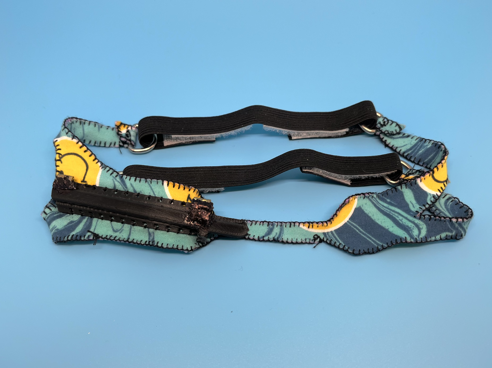

Executive Summary
Identified clinical unmet need in pediatric NG tube securement. Led manufacturing for a protective headgear/clip assembly. Verified design via technical testing and documented FDA regulatory pathways.
Design Iterations & Fabrication
